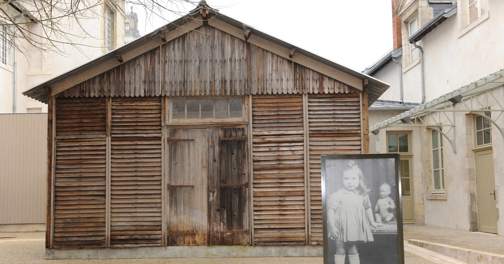

Voyages d'études sur la trace des juifs et tziganes durant la seconde guerre mondiale
Jour 1
Durant le premier jour a la ville d'Orléans, nous sommes partis au musée du Cercil,
une fois la-bas les guides à notre disposition nous ont retracés l’histoire des camps d’internement dans le Loiret durant la Seconde Guerre mondiale.
Photo du musée du Cercil :

Les guides nous ont d'abord raconté l'histoire du petite fille nommé Aline.
Puis ils nous ont aussi parlés des "baraques",et nous ont évoqué les camps
d’internement du Loiret, notamment celui de Jargeau.
Nous avons ensuite visité le musée,et nous avons vu une "baraque" datant de la seconde guerre mondiale .
Photo d'une Baraque :

Un peu plus tard nous devions faire un travail sur une tziganes à l'aide de plusieurs document,
Après avoir fait la correction du travail nous avons regardez un film sur la persecution des tziganes en France.
Le soir nous sommes allés à l'hôtel, et nous avons déposés nos affaires dans nos chambres, une fois fait,
Nous sommes partis manger , et après ça nous sommes allés dormir.